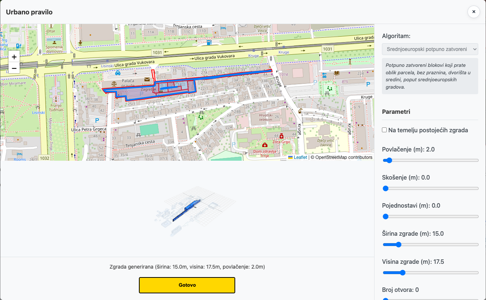
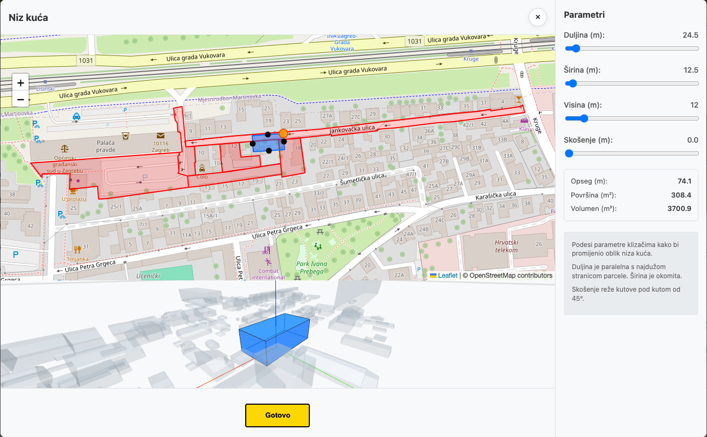
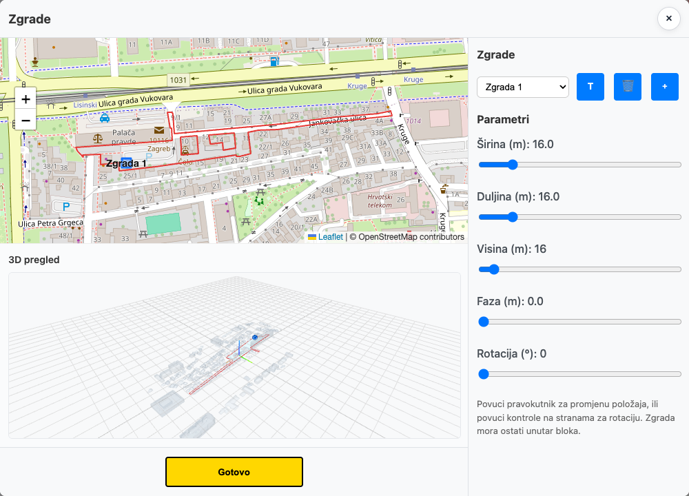

Pravilo ili slobodna ruka
Za zgrade postoje četiri alata, a razlika među njima je jedna: tko odlučuje o obliku. Kod Bloka, Niza i Slobodnostojećih oblik nastaje iz pravila koje zadaš klizačima. Kod Slobodne forme crtaš točno ono što želiš.
Blok — „Urbano pravilo”
Popunjava cijeli blok obodnom izgradnjom — zgrade po rubu, dvorište u sredini. Alat otvara prozor Urbano pravilo s kartom, 3D pregledom i pločom Parametri.
Dva načina rada
Prekidač Na temelju postojećih zgrada mijenja cijelu ploču parametara:
- Isključen (zadano) — blok se crta ispočetka, iz klizača.
- Uključen — zadržava postojeće zgrade i samo im mijenja visinu. Biraš između Predložena visina (katova) (svaka zgrada ide točno na tu visinu) i Dodatni katovi (svakoj se dodaje katova na postojeću visinu). Visina kata je 2,5–5 m.
Klizači (crtanje ispočetka)
| Parametar | Raspon | Što radi |
|---|---|---|
| Povlačenje | 0–50 m | Odmak od ruba čestice. |
| Širina zgrade | 1–100 m | Dubina obodnog trakta. Šire = manje dvorište. |
| Visina zgrade | 3–80 m | Visina obodne izgradnje. |
| Skošenje | 0–10 m | Reže uglove. |
| Pojednostavi | 0–20 m | Zaglađuje nepravilan obris. |
| Broj i širina otvora | 0–10 · 1–20 m | Prolazi kroz obodni trakt (pasaži, ulazi u dvorište). |
| Broj i duljina krila | 0–10 · 10–200 m | Krila koja ulaze u dvorište. |
Ako ti pravilo ne da ono što želiš, klikni Ručno uredi oblik: svaki vrh obrisa postaje ručka koju povlačiš („Povucite za oblikovanje”). Povratak je Natrag na klizače — ali on odbacuje ručne izmjene. Postojeći tlocrt možeš i uvesti gumbom Učitaj GeoJSON.
Potvrdi s Gotovo. Gumb je neaktivan dok zgrada nije generirana.

Snimka zaslona uskoroNiz kuća
Niz prislonjenih kuća preko više čestica. Prozor Niz kuća ima četiri klizača: Duljina (4–200 m), Širina (2–100 m), Visina (3–80 m) i Skošenje (0–10 m, reže uglove pod 45°).
Duljina ide paralelno s najdužom stranicom čestice, širina okomito na nju. Uživo vidiš Opseg, Površinu i Volumen.

Snimka zaslona uskoroSlobodnostojeće kuće
Po jedna samostojeća kuća na svakoj odabranoj čestici. Samo dva klizača:
- Maks. katova (1–20) — svaka kuća dobiva nasumičan broj katova od 1 do te vrijednosti.
- Min. udaljenost od granica (0,5–20 m) — odmak od međa.
Ploča pokazuje Zgrade, Ukupnu tlocrtnu površinu, Ukupni volumen i Prosječno katova.
Slobodna forma
Kad ti nijedno pravilo ne odgovara. Prozor Zgrade nema urbanističku logiku — samo pravokutnike koje sam postavljaš. I nije ograničen na jednu zgradu: gore je popis zgrada s gumbima za dodavanje, preimenovanje i brisanje, pa ih možeš složiti nekoliko.
Za odabranu zgradu klizači su Širina i Duljina (1–100 m), Visina (3–250 m), Faza (0–10 m) i Rotacija (0–355°). Zgradu možeš i jednostavno povući po karti, a kontrolama na stranama je zakrenuti.

Snimka zaslona uskoro